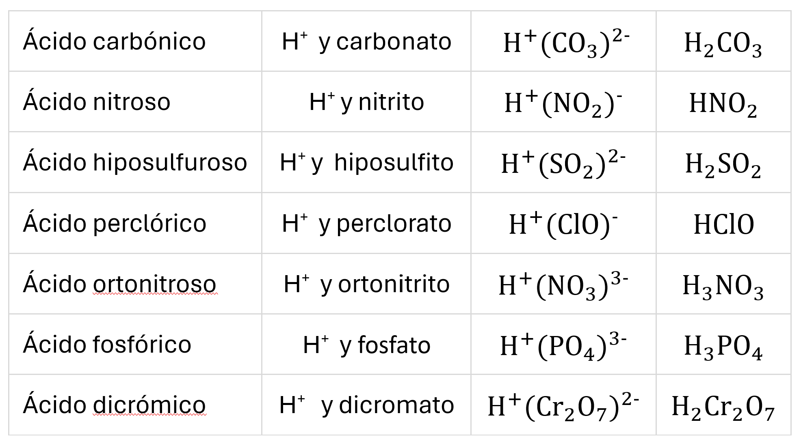

Los oxoácidos son compuestos ternarios. Todos ellos tienen la estructura:
donde a, b y c son subíndices variables y X es el átomo central que es un elemento no metálico, aunque también puede ser un metal como el Cr o Mn.
En los diversos oxoácidos varía el número de oxidación del átomo central.
La IUPAC recomienda la nomenclatura de hidrógeno y la nomenclatura de adición, pero además, debido a lo instalada que está en la comunidad científica, también permite para los oxoácidos la nomenclatura tradicional. Veámoslas a continuación.
Nomenclatura tradicional o nombre vulgar
En esta nomenclatura, más conocida como nombres vulgares, se utiliza la palabra ácido y los prefijos y sufijos: hipo-...-oso. …-oso,...-ico, per-...-ico, según el estado de oxidación del elemento central. Se obtienen a partir de la neutrluzación del ión H+ con el oxoanión correspondiente. Para ello debemos tener en cuenta que los afijos utilizados cambian un poco:
Algunos ejemplos:

La formulación mediante este método es bastante complicada ya que debemos conocer el estado de oxidación del elemento para conocer sus afijos. Debemos saber que en los oxoácidos el H actúa con estado de oxidación 1+, el oxígeno con 2- y que la carga toral del oxoácido debe ser cero. Teniendo esto en cuenta podemos hallar el estado de oxidación del elemento y así determinar su nombre. Veamos algunos ejemplos:
Nomenclatura de hidrógeno
En esta nomenclatura los oxoácidos se nombran con la palabra “hidrogeno” (sin tilde, pero pronunciando con énfasis la sílaba “dro”) y con un prefijo multiplicador que indica el número de hidrógenos, a continuación entre paréntesis la palabra “oxido” (sin tilde) precedida del prefijo numeral que indique en número de átomos de oxígeno y seguido de la raíz del átomo central terminada en -ato. Podemos seguir el siguiente esquema:
Ejemplos:
Ojo! Si existe más de un átomo central, el número de éste se indica con prefijo numeral.
Nomenclatura de adición
En esta nomenclatura se considera que los ácidos están formados por la unión de un átomo central y una serie de ligandos (grupos hidróxido -OH y grupos óxidos =O). Esta forma de nombrar nos informa sobre la estructura de los ácidos.
En este caso los oxoácidos se nombran con la palabra “hidroxido” (sin tilde, pero pronunciando con énfasis la sílaba “dro”) y con un prefijo multiplicador que indica el número de hidróxidos, a continuación y sin espacio palabra “oxido” (sin tilde) precedida del prefijo numeral que indique en número de átomos de oxígeno y seguido del nombre del átomo central. Podemos seguir el siguiente esquema:
Ejemplos:
Truco! se cuentan tantos grupos hidróxidos como hidrógenos haya en la molécula.